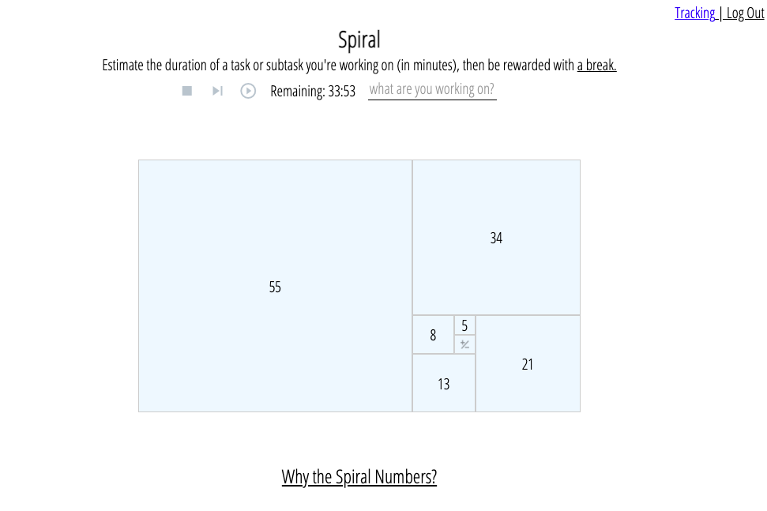
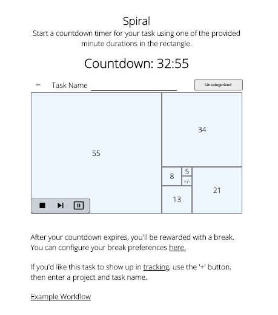

Spiral
Market Research, UI/UX Design, Full Stack Development, React, Node.js, Express, Knex, Postrgres.
An app for mastering your time efficiency.

Big Picture
Market
By 2025, an estimated 70% of the workforce will be working remotely at least five days a month, and full time work from home employment is expected to double in 2021.
At the same time, stress levels are at an all time high, and the mindfulness app market is expected to continue growing through 2027.
Inspiration
I had learned about an Agile time estimation technique that used the Fibonacci series to help estimate how long a project could take in terms of weeks or months. The Fibonacci series is used because it grows at an exponential rate, which can help you more easily differentiate one potential estimate from the next.
I thought the same principal could be applied to shorter time estimates, and that using The Golden Ratio as a visual display could be interesting, so I decided to give it a try.
Why I Chose This Project
This project was a perfect fit for my skill set as someone with solid coding skills, and an eye for minimal UX. I had previously tried several time management solutions looking for a way to be more productive, but in the end they were all usually more trouble than they were worth.
With Spiral I wanted to create something simple and flexible, that could help me (and anyone) work more quickly. I also wanted it to provide some useful time tracking insights that I was having trouble finding in other productivity apps.
Process
Challenges
If a productivity tool isn't well designed it can end up slowing you down, and doing the opposite of what's intended.
With Spiral being an app that users need to return to frequently, it was imperative to keep a one click interface. It was also imperative to make switching the task you're tracking as seamless as possible.
Additionally, I was aware that putting yourself in a time crunch can induce stress, and I wanted to mitigate that with a balanced and calming UX.
Prototypes & User Feedback
By developing a basic prototype with jQuery as soon as possible I could start getting feedback. At this stage, I made sure the project was viable, and that it could add value without having the unintended effect of being a productivity drain.

I then developed a second prototype for React with some notes to the user so I could get improved feedback. At this stage, I learned more about the strengths and weaknesses of my design decisions.
I gathered feedback from family, friends, and mentors. I knew Spiral would need additional revision, but before worrying about the visual design I wanted to make sure the user stories were well defined, and the user interaction was as seamless as possible.
Research & Redesign
To make sure Spiral felt like a mindfulness app, I studied other apps in the meditation space, and looked for common design trends.
With my findings, I went back to the drawing board. After putting in some work, I landed on a clean visual design and came up with a few new UX ideas.


Result
From a technical perspective there were several lessons I learned during this project. Most importantly, since Spiral uses a timer that continually updates state, any change to the parent component could have the unintended consequence of interrupting the timing and making the countdown restart.
I found some ways to work around this, but with a slightly different architecture I might have been able to avoid the pitfall more easily.
From a design perspective, this project reinforced my understanding that process leads to results. An idea might be great, but it doesn't come fully formed, and a lot of people may even scratch their heads when they see it in the beginning.
But by having patience and persistence, the result will be worth it.